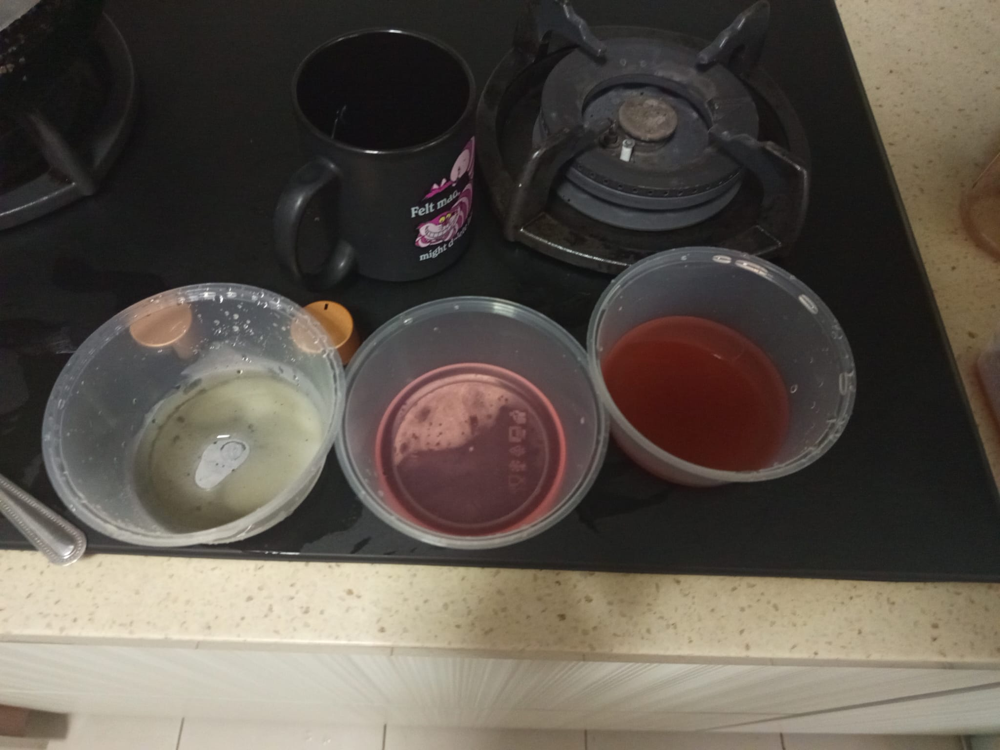

Natural Blend
Our indicator solution is a cold-steeped blend of blueberry extract, red cabbage, and turmeric. Blueberries and red cabbage both carry anthocyanins, pigments that shift from deep red through violet and blue as acidity drops, albeit not as noticeable, due to the turmeric extract being way too powerful compared to others. Turmeric contributes curcumin, which stays strong orange in acid but turns a deep red-brown once a solution turns basic. Combined, the three plant extracts stretch the visible color change across the full range of a 9-slot strip — dip it in, and each slot blooms into the shade that matches its condition, without a single synthetic dye.
Blueberry Extract
Blueberry extract acts as a natural pH indicator because it contains anthocyanins, water-soluble flavonoid pigments responsible for many red, purple, and blue colours found in plants. Changes in hydrogen ion concentration alter the chemical structure of anthocyanins, causing visible colour shifts. In acidic solutions, anthocyanins generally appear red or pink, while increasing alkalinity causes purple, blue, and sometimes greenish tones.
Red Cabbage
Red cabbage is one of the most common natural pH indicators because it contains a high concentration of anthocyanins called cyanidin derivatives. These pigments respond strongly to changes in acidity, producing a wide colour spectrum. Acidic conditions stabilise red forms of the pigment, neutral conditions produce purple colours, and alkaline conditions shift the pigment towards blue, green, and yellow-green shades.
Turmeric
Turmeric contains curcumin, a natural polyphenolic pigment responsible for its bright yellow colour. Unlike anthocyanins, curcumin does not display a large colour range across the whole pH scale. Instead, it acts as a selective alkaline indicator. In acidic and neutral solutions, curcumin remains yellow, while strongly basic solutions cause structural changes that produce orange-red to reddish-brown colours.
Recipes
Blueberry Indicator
Wash and crush approximately 200.0 g of fresh blueberries into a smooth pulp. Heat 1000 mL of distilled water to 60°C and combine with the pulp, stirring continuously for 1 minute. Cover and steep for 25 minutes, stirring every 5 minutes. Filter through filter paper, allow the extract to cool to room temperature, then transfer to a labelled amber bottle. Store refrigerated at 4°C and use within 48 hours for the most reliable results.
Red Cabbage Indicator
Wash approximately 200.0 g of fresh red cabbage and chop into roughly 1 cm × 1 cm pieces. Heat 1000 mL of distilled water to 80°C and pour over the cabbage until fully submerged, stirring gently for 1 minute. Cover and steep for 20 minutes, maintaining the temperature between 75–80°C and stirring every 5 minutes, until the water turns deep purple. Filter, cool to room temperature, and transfer to a labelled amber bottle. Store refrigerated at 4°C and use within 48 hours.
Turmeric Indicator
Measure 50.0 g of turmeric powder and gradually add it to 1000 mL of 95% ethanol, stirring continuously to prevent clumping. Cover and let stand for 30 minutes, stirring gently every 5 minutes to maximise curcumin extraction. Filter through filter paper, repeating if fine particles remain, to obtain a clear yellow curcumin-containing solution. Seal tightly in an amber bottle and store in a cool, dark location or refrigerate at 4°C until use.
Literature Review
Jeremy
Natural indicators are substances that change colour when they are added to different pH levels of different solutions like acids, nuetral and alkali solutions. Many fruits, flowers and vegetables can be used as natural indicators because they contain pigments that react to changes in pH. One of these pigments is called anthocyanin, which is found in red cabbage and gives them their reddish purple colour. Anthocyanins undergo structural changes when hydrogen ion concentration changes. In acidic solutions, the pigment exists mainly as flavyllium cation, producing a red colour. As the pH increases, the molecular structure changes into quinoidal bases,turning the solution blue and purple. In a stronger alkali,,more structural transformations will produce green and yellow-green colours. These structural changes alter the wavelengths of light absorbed by the pigments, causing different colours to be seen depending on the pH level of solutions Based on this, I decided the choose red cabbage as my natural indicator. Firstly, to extract the indicator, wash fresh red cabbage leaves with distilled water to remove dirt .Cut the cabbage into small pieces and transfer the cabbage into a pot.Add enough water to cover the cabbage, The heat the mixture until it boils and continue heating for around 15-20 minutes.Observe the water gradually turning deep purple as anthocyanins dissolve into the water.Next, turn off the heat and allow it to cool to room temperature.Filter the mixture through filter paper into a clean beaker to remove solid cabbage pieces.FInally,the liquid that is left over is the red cabbage natural indicator.Store the indicator in a labelled container until use.Next, to test the indicator,fill 3 bowls with vinegar, dissolved baking soda and water respectively into each of the three bowls.Next, add equal parts red cabbage indicator into each and stir.Observe and record the final colour using the colourmeter app to get the exact colour.Repeat the experiment a few more times to see if the colour change is the same to ensure reliability.From my experiment, I saw that in the vinegar solution, which is an acid, the indicator turned reddish pink, the natural indicator remaining the same colour in water and the natural indicator turning baby blue in the baking soda solution, which is a alkali. The independent variable in the experiment is the pH of the three different household reagents,the dependent variable is the final colour of the red cabbage indicator after it is added to each solution. Some of the constant variables include the concentration of natural indicator, volume of household reagents added,lighting conditions to ensure that the colours are compared accurately and finally the volume of natural indicator added into each bowls. In addition, i had to take some safety precautions while conducting this experiment such as wearing safety goggles throughout the experiment to protect the eyes from acidic and alkaline solutions,Wearing heat-resistant gloves when handling hot beakers to prevent burns,Using a cutting board and handling the knife carefully when chopping the cabbage. In addition, I had to allow the hot extract to cool before filtering to prevent burns Allow the hot extract to cool before filtering to prevent burns and reduce the risk of the glassware cracking. At the end of the experiment, I ensured that I washed my hands thoroughly after completing the experiment. During the experiment, I realised that factors such as the concentration of the extract and the lighting conditions affected the results. Some colour changes were also easier to identify than others. This showed that although blueberry extract can be used as a natural indicator, it may not always produce completely accurate or consistent results. Some advantages of using red cabbage as a natural indicator is that red cabbage extract effectively identifies acidic, neutral and alkaline solutions through clear colour changesIt can even identify if it is a strong or weak acid or a strong and weak alkali. This is supported by scientific studies showing that anthocyanins undergo structural changes at different pH values, producing different colours.The indicator is also inexpensive, non-toxic, environmentally friendly,and easy to make. However, this indicator cannot accurately determine the exact pH of the solution because colour changes are gradual and not extremely specific and may be difficult to distinguish between similar pH values. In addition,different lighting can alter the colours when recording it, leading to different colours recorded.Finally, anthocyanins degrade when exposed to heat, light and oxygen, reducing the indicator's stability over time. Hence, these limitations can affect the ph recording and may cause results to be different than expected. To improve on these limitations, we can add more controlled variables in the experiment so that it does not affect the colour changes such as the volume of water and heating time and repeat each test at least three times and compare the colour each time.Recording colours on a colourmeter can make the colour recording more specific, while storing the extract in a cool, container will minimise anthocyanin degradation by keeping it cool to maintain indicator performance.
Benjamin
Natural indicators are substances that change colour when they are added to acidic, neutral, or alkaline solutions. Many fruits, flowers, and vegetables can be used as natural indicators because they contain pigments that react to changes in pH. One of these pigments is anthocyanin, which gives blueberries their blue-purple colour. Before starting this investigation, I researched how anthocyanins behave in different pH conditions. Studies showed that they usually appear red or pink in acidic solutions, purple in neutral solutions, and blue, green, or yellow-green in alkaline solutions. This suggested that blueberry extract could be used as a natural pH indicator. Based on this research, I predicted that blueberry extract would produce different colours when added to acidic, neutral, and alkaline solutions. I extracted the pigment from blueberries and tested it using vinegar, water, and baking soda. During the experiment, the acidic solution turned reddish, the neutral solution became a mulberry-purple colour, and the alkaline solution turned pale greenish-grey. These results were similar to those described in the research. The materials used included blueberries, distilled water, vinegar, baking soda, filter paper, measuring equipment, and containers. The blueberries were blended and filtered to obtain the extract before equal amounts were added to the different solutions. Safety precautions, such as careful handling of the solutions and cleaning up spills immediately, were also followed. As the investigation progressed, I realised that factors such as the concentration of the extract and the lighting conditions affected the results. Some colour changes were also easier to identify than others. This showed that although blueberry extract can be used as a natural indicator, it may not always produce completely accurate or consistent results. Overall, the individual research gave me a better understanding of how natural indicators work and helped me with the results of the experiment. It also provided a strong foundation for the next stage of the project, in which my group combined several natural indicators to create a wider range of colour changes.
Haofei
Natural indicators are substances that change color when added to acidic, neutral, or alkaline solutions. Many plants serve as natural indicators because they contain pigments that respond to changes in pH. One such pigment is curcumin, found in turmeric, which gives it its bright yellow color. Prior to starting this investigation, I looked into how curcumin behaves under different pH conditions. Curcumin is stable and remains yellow in acidic and neutral solutions. However, in alkaline solutions, its molecular structure changes when hydrogen ions are removed, resulting in a different chemical structure that absorbs light differently. This causes the color to shift from yellow to reddish-brown. Unlike anthocyanins, curcumin does not produce a wide range of colors, but it effectively detects alkaline solutions. Based on this research, I chose to use turmeric as my natural indicator. To prepare the indicator, I mixed one teaspoon of turmeric powder with about 100 mL of warm distilled water and stirred until the pigment was evenly distributed. I filtered the mixture through filter paper into a clean beaker to remove any solid particles. Finally, I collected the filtered liquid and stored it in a labeled container until I was ready to use it. Next, to test the indicator, I filled three bowls with vinegar, dissolved baking soda, and water. I added equal amounts of turmeric indicator to each bowl and stirred well. I then observed and recorded the final color using a color meter app to get accurate readings. I repeated the experiment several times to ensure the results were reliable. From my experiment, I noticed that the turmeric indicator remained yellow in vinegar, which is acidic, and also stayed yellow in water, which is neutral. However, in the baking soda solution, which is alkaline, the indicator changed to a reddish-brown color. The independent variable in this experiment was the pH of the three different household solutions. The dependent variable was the final color of the turmeric indicator after it was added to each solution. Some controlled variables included the concentration of the turmeric indicator, the volume of each household solution, the volume of indicator added to each bowl, and the lighting conditions to ensure accurate color comparison. During the experiment, I followed several safety precautions. I wore safety goggles throughout to protect my eyes from acidic and alkaline solutions. I handled all glassware carefully to avoid breakage and cleaned up any spills immediately to prevent staining, as turmeric is a strong natural dye. I also washed my hands thoroughly after finishing the experiment. Throughout the investigation, I realized that the concentration of the turmeric extract and the lighting conditions affected how clearly the color change could be seen. Additionally, turmeric only changes color in alkaline solutions, so it cannot distinguish between acidic and neutral solutions. This means that while turmeric is a useful natural indicator, it has limitations compared to indicators that show a broader range of colors. Some advantages of using turmeric as a natural indicator are that it is cheap, non-toxic, environmentally friendly, and easy to prepare. It yields a clear and distinct color change in alkaline solutions, making it useful for identifying bases. Scientific studies also indicate that curcumin experiences structural changes in alkaline conditions, leading to the characteristic reddish-brown color. However, turmeric cannot accurately determine the exact pH of a solution since it only shows a noticeable color change in alkaline conditions. It also cannot differentiate between acidic and neutral solutions since both remain yellow. Additionally, prolonged exposure to light and heat may reduce the stability of curcumin over time, affecting the reliability of the indicator. To improve the investigation, more controlled variables could be added, such as using the same heating time when preparing the extract and measuring equal concentrations of turmeric for every trial. Repeating each test at least three times would increase the results' reliability. Recording colors with a color meter app would also make observations more objective. Finally, storing the turmeric extract in a cool, dark container would help reduce the degradation of curcumin and maintain the indicator's effectiveness.
Results
Photos from testing the extracts, comparing extract colour at different stages and against unknown-sample beakers.





Scientific References
- Giusti, M. M., & Wrolstad, R. E. (2001). Characterization and measurement of anthocyanins by UV-visible spectroscopy. Current Protocols in Food Analytical Chemistry.
- Khoo, H. E., Azlan, A., Tang, S. T., & Lim, S. M. (2017). Anthocyanidins and anthocyanins: colored pigments as food, pharmaceutical ingredients, and the potential health benefits. Food & Nutrition Research, 61(1), 1361779. https://doi.org/10.1080/16546628.2017.1361779
- Kalt, W., Cassidy, A., Howard, L. R., Krikorian, R., Stull, A. J., Tremblay, F., & Zamora-Ros, R. (2020). Recent research on the health benefits of blueberries and their anthocyanins. Advances in Nutrition, 11(2), 224–236. https://doi.org/10.1093/advances/nmz065
- Priyadarsini, K. I. (2014). The chemistry of curcumin: From extraction to therapeutic agent. Molecules, 19(12), 20091–20112. https://doi.org/10.3390/molecules191220091
- Stanković, M. S. (2011). Total phenolic content, flavonoid concentration and antioxidant activity of Marrubium peregrinum L. extracts. Kragujevac Journal of Science, 33, 63–72.